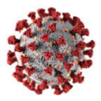
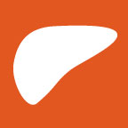

Oren Fix, MD
COVID-19 and the Liver
AASLD COVID-19 for Liver Transplant Recipients FAQ
AASLD Expert Panel Consensus Statement: COVID-19 Clinical Best Practice Advice for Hepatology and Liver Transplant Providers
UpToDate: COVID-19 and Liver Disease in Adults
AASLD COVID-19 Resources
Medical Apps
MELD 3.0 Calculator
Hepatology Calculators
ALF Checklist
RHIML Calculator
Publications
Bibliography on PubMed